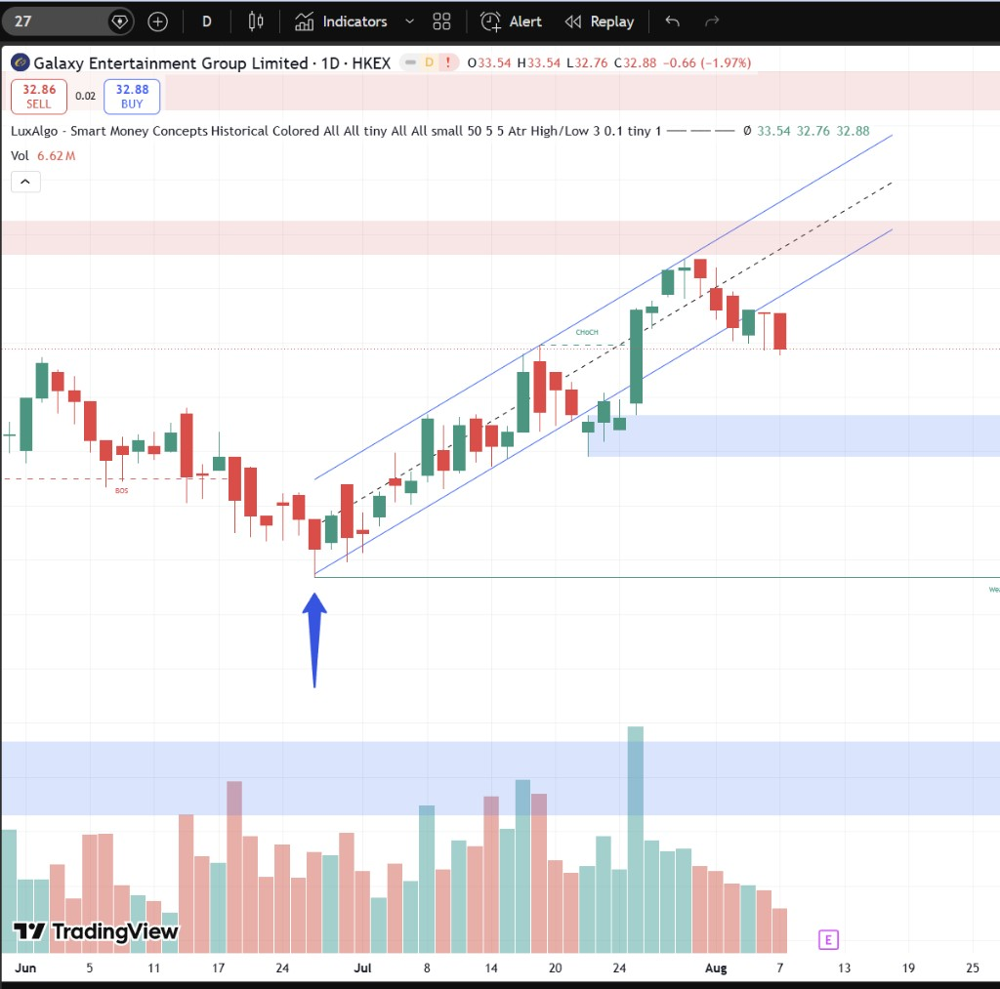
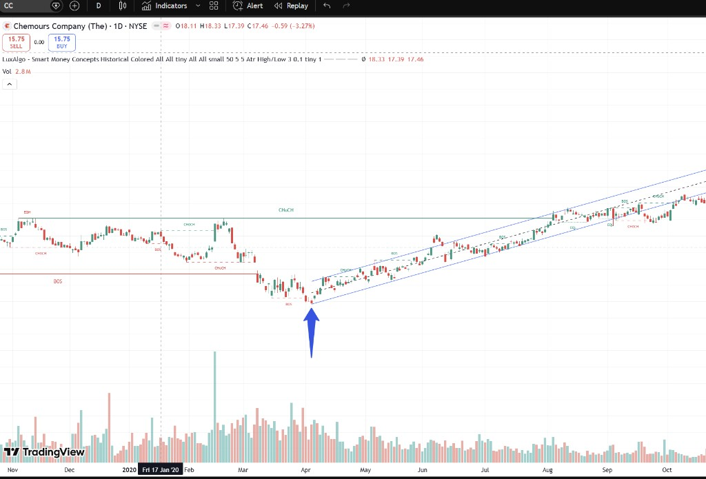
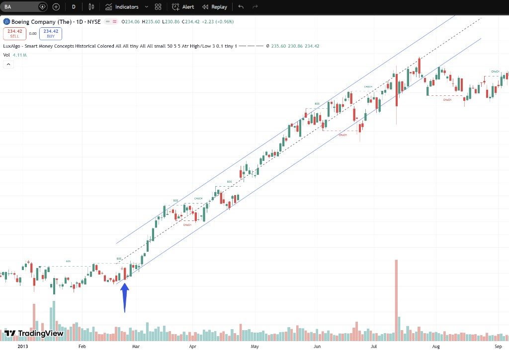
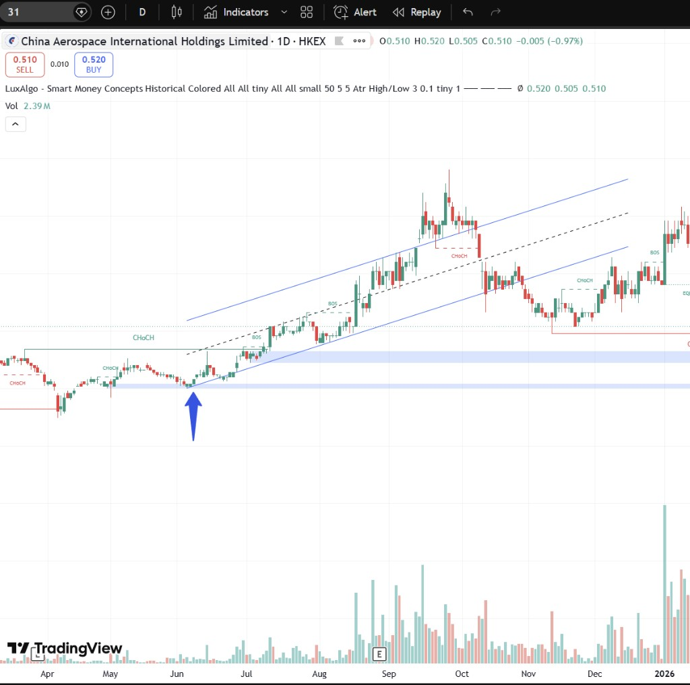
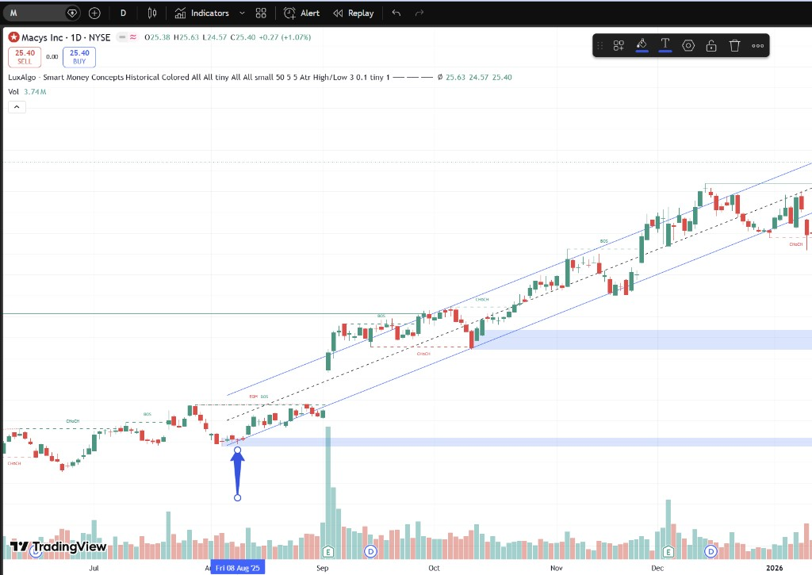

01
CHoCH 確認翻轉
價格首次突破前一個波段高點，SMC 標記 CHoCH，確認市場結構由空轉多。沒有 CHoCH，低點可能只是下跌中繼。
✓ CHoCH 出現後才尋找低點
First Low in Uptrend · 上升趨勢第一個低點
當市場出現 CHoCH（性格轉變）後，價格形成第一個更高的低點，即為上升趨勢的起點。 這個低點通常是最佳進場區，止損設在其下方，順勢跟隨上升通道操作。
上升趨勢的第一個低點，是 CHoCH 確認後最低的那個轉折點。以下四個條件幫助你精準定位。
價格首次突破前一個波段高點，SMC 標記 CHoCH，確認市場結構由空轉多。沒有 CHoCH，低點可能只是下跌中繼。
CHoCH 之後的最低點即為「第一個低點」。常伴隨長下影線，代表下方有強力承接，是趨勢翻轉的根基。
從第一低點開始，價格沿著平行上升通道運行——更高的高點、更高的低點。通道下軌即為動態支撐。
第一低點附近常形成 Demand Zone（需求區）。價格回測此區域時，是低風險的加倉或進場機會。
Smart Money Concepts 框架下，第一低點在整個上升趨勢中扮演關鍵角色。
價格突破前高，趨勢由跌轉升的信號。CHoCH 出現後，才開始尋找第一個低點作為進場參考。
上升趨勢中，每次 BOS 確認更高的高點。第一低點之後的第一個 BOS，驗證趨勢已正式啟動。
第一低點是整個上升結構的基石。後續每個回撤低點都必須高於它，否則趨勢結構被破壞。
第一低點附近的買盤聚集區。價格回測需求區並止跌，是最理想的低風險進場點。
從識別到進場，四步鎖定上升趨勢的第一個低點。
止損設在第一低點下方（或通道下軌下方），目標看向通道上軌或前高阻力。第一低點被跌破，代表趨勢翻轉失敗，立即離場。
以下 5 個真實 TradingView 圖表，藍色箭頭標記上升趨勢的第一個低點。

6 月底 CHoCH 後形成第一低點，隨後沿上升通道運行，需求區於 7 月底提供支撐。

2020 年 4 月疫情底部為第一低點，之後進入長期上升通道，8 月突破 2019 年高位阻力。

2013 年 2 月突破盤整後，箭頭標記第一個回撤低點，隨後沿通道穩步上升數月。

6 月初 CHoCH 確認後，箭頭標記趨勢翻轉的第一低點，需求區與通道下軌重合。

2025 年 8 月 CHoCH 後形成第一低點，9 月放量突破啟動升浪，沿上升通道穩步上行。
沒有 CHoCH 確認，不要提前猜底。趨勢翻轉信號出現後，才開始尋找第一低點。
止損設在第一低點下方。若價格跌破此位，代表上升結構失效，立即平倉。
趨勢成熟後，可將止損上移至上升通道下軌，保護利潤同時給予價格波動空間。
不必追漲。等待價格回測第一低點或需求區，出現止跌信號後再進場，風險報酬比更優。
第一低點確認後，只在 BOS 方向（做多）操作。CHoCH 反轉出現時減倉或離場。
第一低點處成交量萎縮（賣壓衰竭），突破時放量（買盤進場），兩者齊備才具高勝率。